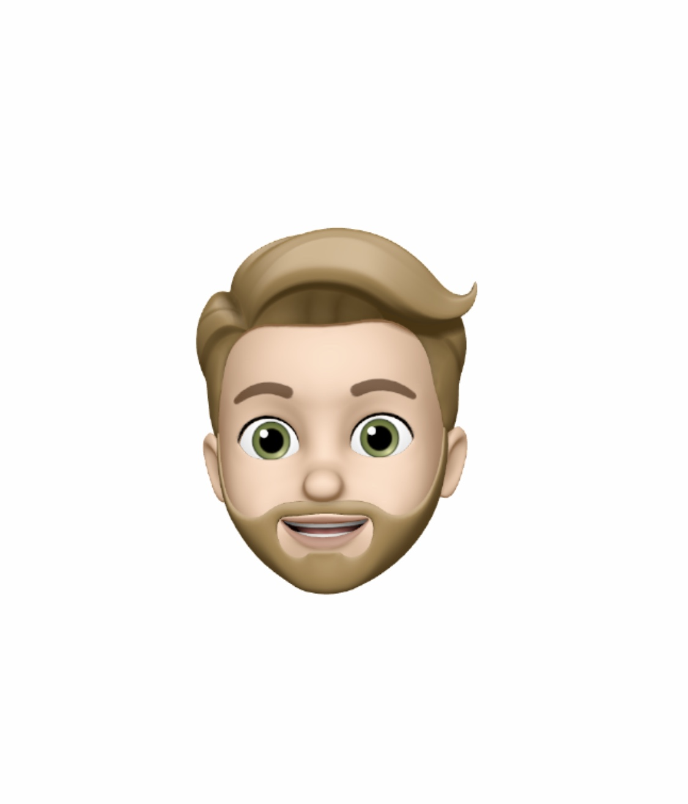

Sven Trittler
Senior Software Engineer
I work on data distribution in robotic systems, connecting their components through data. I’m also the creator of CycloneDDS Insight, with a mission to make DDS accessible to everyone.

Senior Software Engineer
I work on data distribution in robotic systems, connecting their components through data. I’m also the creator of CycloneDDS Insight, with a mission to make DDS accessible to everyone.